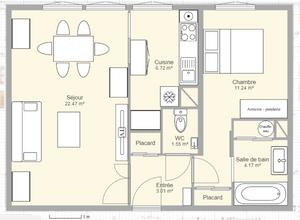
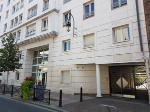
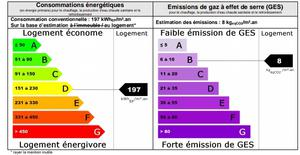

Situé au 2ème étage dans un immeuble de standing au sein d'un quartier calme, l'appartement est un 2 pièces de 50 m² avec une vue dégagée sur les tours de la défense. Les fenêtres donnent sur une petite rue à sens unique.
Loyer: 1350€ par mois
Charges: 135€ de charges locatives (provision donnant lieu à une régularisation annuelle)
couvrant charges communes (taxes ordures ménagères, eau, gardien...)
et consommation d'électricité
Dépôt de garantie: 1350€
- Cave et garage (box individuel fermé) compris dans la location
- Accès digicode + interphone ou vigic
- Gardien présent dans l'immeuble
- Proche commerces et transports en commun - métro 1 (esplanade de la défense) & T2 (puteaux)
- A proximité de la défense (10mn à pied)
- Chauffage électrique individuel & double vitrage
- Chauffe eau électrique avec ballon
- Accès ascenceur
- Vide ordure sur le palier à l'étage
- Immeuble et appartement fibrés
- Compteur d'eau individuel (consommation comprise dans les charges)
